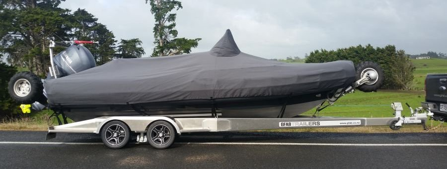
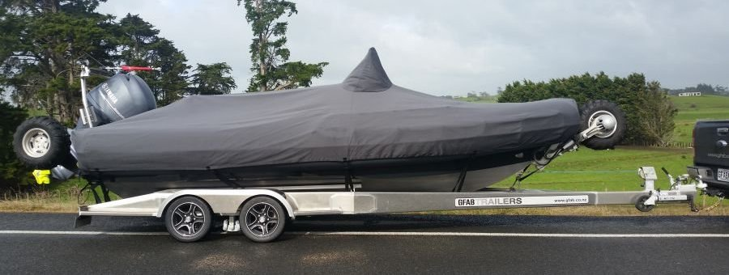
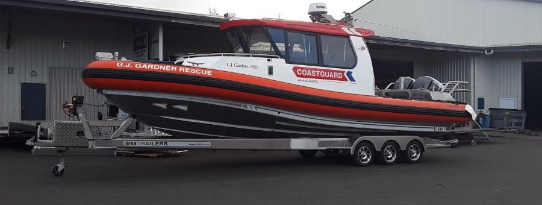
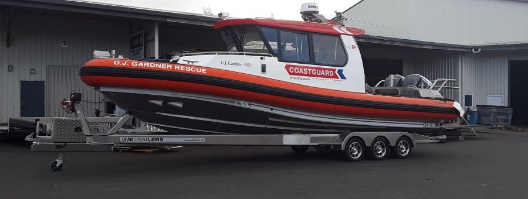

 

For years the purchase of a boat trailer has been perceived as simply to find the lowest cost option to move a boat around. Increasing fuel prices, short chassis life of galv trailers and clamp downs on overweight boat trailer combo's has changed this perception.
GFab manufacturers a range of aluminium boat trailers, our customers have discovered the benefits are huge and that significantly improved tow weights is just the start.
Our alloy boat trailers are custom configured to suit your boat. Having experience in the building of boats, we understand the best approach to producing an alloy boat trailer that will fit your boat perfectly!
Over the years we have produced alloy boat trailers for boats ranging from 3 - 9 meteres and can custom design options for larger boats also.
As your aluminium boat trailer specialist. GFab trailers produce alloy trailers of the highest quality due to:
- Better corrosion resistance from rust free, high tensile, marine grade alloy.
- Better designed leading to lower center of gravity.
- Lightweight materials delivering significant weight savings. We recently saved over 300kg on a 9m trailer.
- Improvements in fuel efficiency, balance and safer towing behavior.
- Stainless brake calipers and marine grade fittings.
- NZ supplied components and running gear.
- Option of custom fitted skids or roller bunks.
- No need to re-galv your trailer every few years.